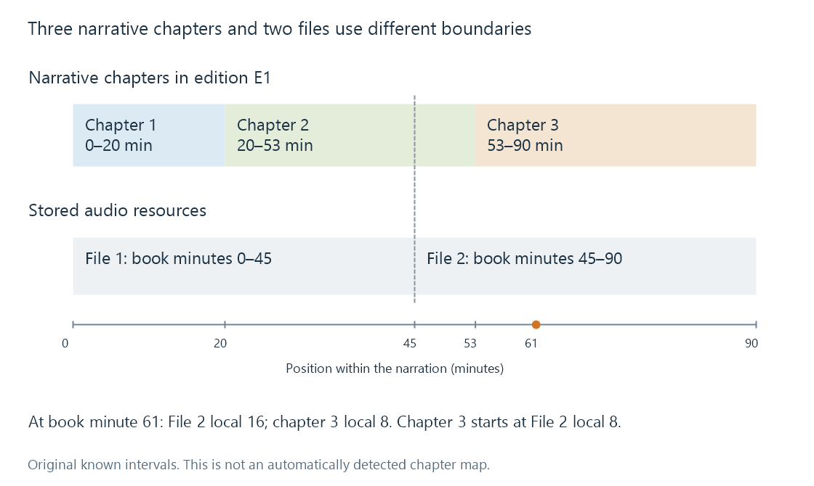

Audiobook chapter structure
Audiobook chapter structure relates narrative divisions and navigation markers to resource-local timelines that may not share the same file boundaries.
A chapter can mean a division in the written work, a navigation point in an audio resource, or a file selected by a player. Those meanings often coincide in a well-prepared audiobook, but none automatically guarantees the others.
For a listener, the important questions are which passage a chapter names and where that passage begins in the represented narration.
Three chapters, two files
Use the original 90-minute edition of The Lantern Keeper:
| Narrative chapter | Position in this narration | Duration |
|---|---|---|
| 1, The Door | 0:00–20:00 | 20 minutes |
| 2, The Lamp | 20:00–53:00 | 33 minutes |
| 3, The Return | 53:00–90:00 | 37 minutes |
Now divide the storage into two 45-minute files. The split lies inside chapter 2:

File 1 ends 25 minutes into chapter 2. File 2 begins with the final eight minutes of chapter 2, then chapter 3 starts at its local minute 8. Calling the whole second file “chapter 3” would lose that distinction.
These are known boundaries in a fictional model, not a chapter detector or actual book recording.
Translate a position using resource offsets
For whole-book minute 61, first locate the resource interval. It lies in File 2, whose whole-book start is minute 45:
file 2 local position = 61 - 45 = 16 minutes
chapter 3 local position = 61 - 53 = 8 minutes
Both coordinates are correct. They identify different origins.
For chapter 3's start, the File 2 marker is at 53 - 45 = 8 minutes. A marker at local minute 53 would lie outside the 45-minute second file.
The inverse is equally important. A stored resume value of 16:00 in File 2 becomes book minute 61 only when the resource's offset is known. Applying that number to another part or another narrated edition is a different operation.
Chapter metadata refers to the resource
A single-file audiobook can carry chapter metadata at each navigation position. Multiple file formats provide representations for such information.
MP4-based audiobook resources can use chapter structures understood by compatible readers. The .m4b suffix supplies a customary resource label; it does not identify which chapter representation is present or whether an app will expose it.
ID3's chapter extension defines CHAP frames for chapter information and CTOC frames for tables of contents. Chapter element identifiers connect the table to the chapter frames. They are local identifiers within the tag, not global book identifiers.
An illustrative single-file representation of the same narration would use:
| Chapter element | Start in milliseconds | End in milliseconds |
|---|---|---|
| c1 | 0 | 1,200,000 |
| c2 | 1,200,000 | 3,180,000 |
| c3 | 3,180,000 | 5,400,000 |
The table is field arithmetic, not complete encoded ID3 frames. Twenty minutes is 20 × 60 × 1,000 = 1,200,000 milliseconds. A chapter field in milliseconds must not be read as the 100-nanosecond ticks used by some playback interfaces.
The table of contents can supply an ordered relationship among c1, c2 and c3. A chapter label such as The Return describes content; its element ID supplies the local reference; its start value supplies a timeline position.
Narrative divisions need accurate navigation evidence
A file can have navigation points every ten minutes without those points being the book's narrative chapters. Conversely, a named chapter can contain sub-sections worth navigating independently.
A table of contents can therefore represent hierarchy rather than only a flat numbered list. The structures and display behavior depend on the reader. Format capability and app support are separate questions.
Emby's audiobook documentation describes embedded chapter/track and disc numbering for resource organisation. That concerns the represented sequence; it should not be read as a promise that every chapter frame in every supported audio container produces identical app navigation.
A different edition changes the map
Dane Rowan's reading can place The Return at minute 67 instead of minute 53. The title can still identify the same narrative chapter, while every marker value needs its edition's own timeline.
An abridged edition can remove a chapter or combine passages. Retaining the old numbers and elapsed-time values then creates apparently precise navigation to the wrong content.
See Also
- Audiobook organization
- Audiobook editions and narrated versions
- Chapter Markers
- MP4 and the ISO Base Media File Format
- ID3v2 audio tags
- Resume positions and playback timelines